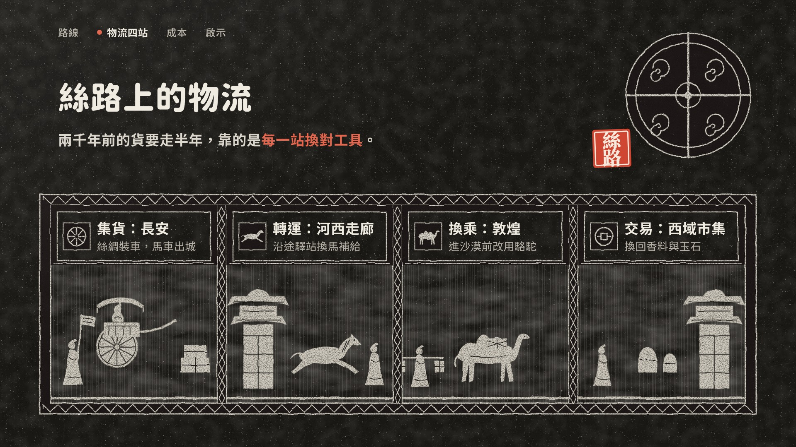
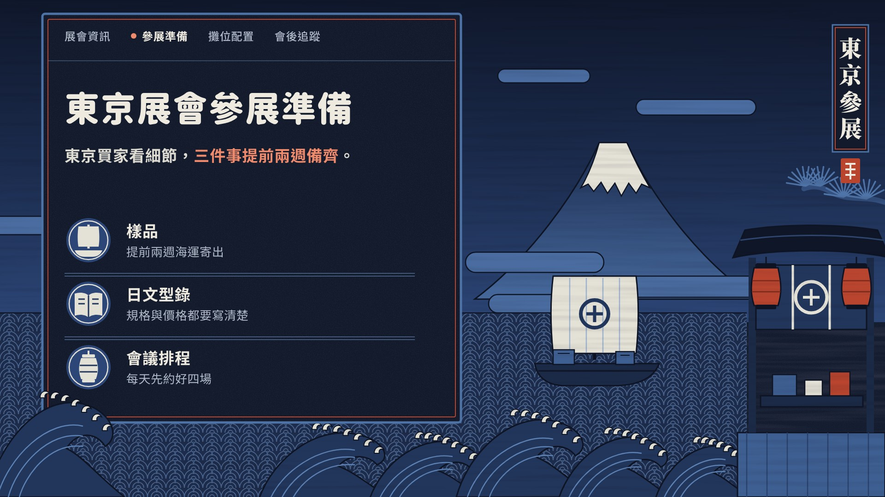

插畫場景：補另一種明暗（四張示範）
版面不動，只換明暗。變暗不等於夜晚：只換光線，或用材質本身的深色款；月亮星星跟著內容走。B 版面寫字的載體跟著變深。左邊是原有的，右邊是新補的。
紙黏土 淺 → 深換光線：拉上百葉窗、關掉大燈，只留檯燈與螢幕的暖光，往右逐漸變暗
 原有：淺色 粉彩黏土，白天的房間
新補：深色 C-scene-dark 黏土亮面轉暖、暗面轉冷
原有：淺色 粉彩黏土，白天的房間
新補：深色 C-scene-dark 黏土亮面轉暖、暗面轉冷
霓虹 深 → 淺換光線：店裡燈全開的白漆磚牆；燈管照樣亮著，看得到支架、投影與電極盒
 原有：深色 暗磚牆；窗裡的月亮已拿掉（時間記號跟著內容走）
原有：深色 暗磚牆；窗裡的月亮已拿掉（時間記號跟著內容走）
 新補：淺色 neon-C-light 色光收成光暈，亮芯是一條淡色細線
新補：淺色 neon-C-light 色光收成光暈，亮芯是一條淡色細線
漢畫像石拓片 淺 → 深材質深色款：烏金拓。人物凹刻成灰白剪影，刻線發白；瓦當維持黑色，不做成像月亮的淺色圓盤
 原有：淺色 宣紙上的墨拓
原有：淺色 宣紙上的墨拓

新補：深色 han-C-dark 整張重墨，黑亮
浮世繪 淺 → 深材質深色款：藍摺絵，只用藍的濃淡套印；題箋改墨地，字白抜き
 原有：淺色 和紙題箋
原有：淺色 和紙題箋

新補：深色 ukiyoe-B-dark 和紙的白只留在雪頂、帆、浪花；朱只留在關鍵字、燈籠、印